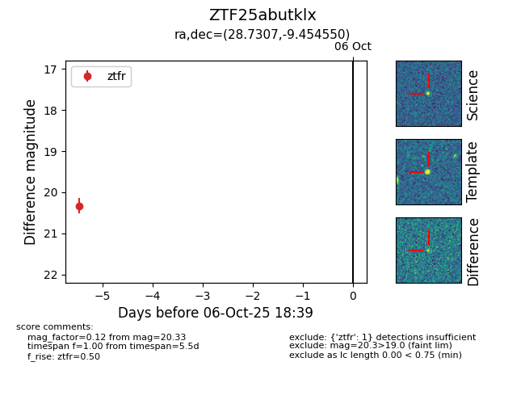

FINK: ZTF25abutklx
Lasair: ZTF25abutklx
ALeRCE: ZTF25abutklx
ZTF25abutklx (ztf,fink)
equatorial (ra, dec) = (28.7307,-9.45455)
galactic (l, b) = (166.2135,-66.82893)

last ztfr=20.33
1 ztfr detections